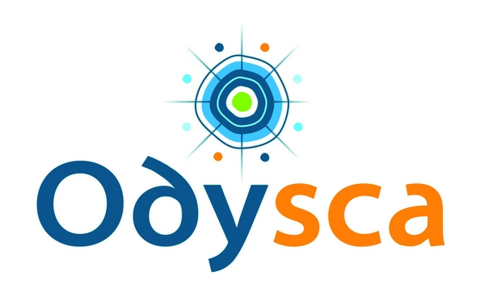
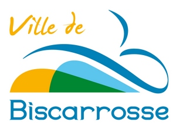
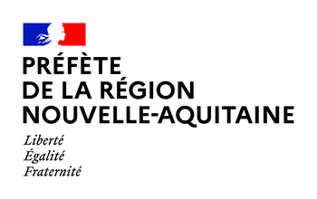
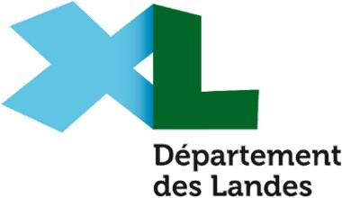
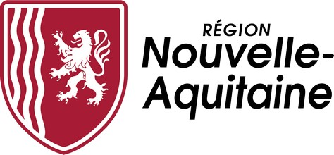
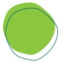
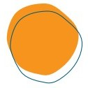
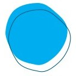
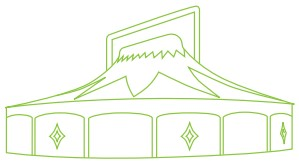

Vers une nouvelle Scène Conventionnée d'Intérêt National dans les Landes
« Art & Création »
UN PROJET SOUTENU PAR




ODYSCA, héritière de 40 ans d'engagement culturel sur le territoire (1985-2025), porte aujourd'hui un projet structurant : devenir une Scène Conventionnée d'Intérêt National (SCIN) « Arts & Création » dédiée au cirque de création.
En 2021, la Ville de Biscarrosse a confié à l'Université Bordeaux Montaigne (UBiC) une étude d'opportunité pour le déploiement d'un Pôle Cirque permanent. Cette étude, restituée en 2022, a confirmé la faisabilité et la pertinence du projet. Elle a également mis en lumière la nécessité d'accompagner l'association CRABB (devenue ODYSCA) dans l'évolution de sa gouvernance et de son modèle.
Le présent DLA (Dispositif Local d'Accompagnement) s'inscrit dans cette continuité. Il a pour objectifs de :
Un accompagnement stratégique pour la structuration du projet
ODYSCA a bénéficié de l'accompagnement de Karine Puyo (Cabinet Combustible) puis d'Hugues Barbotin (HB.Ecoprod). Expert en accompagnement des acteurs culturels dans leurs transitions sociales, écologiques et économiques, Hugues est co-fondateur du Festival Terres du son.
Cet appui a permis d'affiner le diagnostic, de consolider le plan d'action et de sécuriser les orientations stratégiques du DLA. La contribution d'Hugues Barbotin a été précieuse pour faire du projet ODYSCA un projet robuste, partagé et ancré dans les réalités du territoire, en intégrant une approche de responsabilité sociale et environnementale.
Biscarrosse et les Grands Lacs connaissent une dynamique démographique et touristique forte, mais également un vieillissement de la population et un risque d'isolement des jeunes. Dans ce contexte, ODYSCA apporte une réponse concrète : un lieu de vie, de pratique et de rencontre, ouvert à tous.
Le cirque de création n'est pas qu'un spectacle : c'est un outil d'émancipation, de lien social et de construction citoyenne. Il permet aux enfants de se réapproprier leur corps, aux jeunes de développer confiance et esprit d'équipe, aux séniors de rester en lien avec la vie culturelle du territoire.
En devenant Scène Conventionnée d'Intérêt National, ODYSCA ne cherche pas un label pour lui-même, mais un levier pour amplifier son impact social et culturel au service des habitants.

Soutien à la création artistique dans l'intérêt général

Production et diffusion d'œuvres vivantes

Éveil, éducation et formation artistique de tous les publics
✦ Les 5 axes stratégiques ✦
Le diagnostic qui suit s'appuie sur l'étude d'opportunité réalisée par l'Université Bordeaux Montaigne (UBiC) en 2022 à la demande de la Ville de Biscarrosse.
| Forces | Fragilités |
|---|---|
| Plus de 40 ans d'engagement et de légitimité | Équipe restreinte (1,69 ETP) au regard des missions |
| Spécialisation reconnue pour le cirque de création | Absence de postes dédiés à la médiation et la communication |
| Festival "Rue des Étoiles" : notoriété régionale et nationale | Ateliers cirque amateurs qui peinent |
| Partenariats solides (Ville, Département, Région, Etat) | Fréquentation en légère érosion (88 payants/spectacle) |
| Reconnaissance nationale (Territoires de Cirque, ONDA, PNAC) | Vieillissement du vivier bénévole |
Les trois préalables identifiés par l'UBIC :
| Année | Événement clé |
|---|---|
| 1985 | Naissance du CRABB en substitution du foyer des jeunes |
| 1988 | 1er festival (Jazz) |
| 1990 | Lancement de la première saison culturelle : La Passion du Spectacle |
| 1993 | Concert de Santana au Stade de Biscarrosse |
| 1997/98 | Naissance du festival Rue des Étoiles (cirque et danse) |
| 2001 | Obtention du label « Scène Départementale » |
| 2003 | Convention avec Sanguinet |
| 2006 | Rue des Étoiles devient 100 % cirque contemporain |
| 2011 | Adhésion au réseau national « Territoires de Cirque » |
| 2012 | Ouverture de la salle de l'Arcanson |
| 2017 | Recentrage du projet artistique sur le cirque contemporain |
| 2019 | Conventionnement DRAC Nouvelle-Aquitaine |
| 2023 | Le CRABB devient ODYSCA |
| 2025 | Rachat du chapiteau de Bègles par la Ville |
| 2026 | Année de la présente étude DLA |
Le soutien à la création constitue depuis toujours l'un des trois piliers d'ODYSCA. Depuis 2023, plus de 20 000 € ont été investis chaque année dans l'accueil de compagnies en résidence – un effort déjà notable au regard du budget global de la structure (~350 K€).
Deux formats d'accueil coexistent et seront maintenus :
| Jours de résidence | 2026 | 2027 | 2028 | 2029 |
|---|---|---|---|---|
| Volume annuel | 60/70 | 60/70 | 70/80 | 70/80 |
L'arrivée du chapiteau change la nature de l'accueil : les compagnies bénéficient désormais d'un espace de répétition et de résidence "haut de gamme", disponible toute l'année, ce qui constitue un argument fort auprès des réseaux régionaux et nationaux – sans que cela ne se traduise mécaniquement par une explosion du volume, mais plutôt par une amélioration de la qualité d'accueil.
Trois artistes associées structurent le compagnonnage artistique d'ODYSCA : Anna (acro-danse), Lolita (respiration, acrobatie) et Antoine (voltige aérienne, également directeur technique). Ce compagnonnage permet à la fois de soutenir leur parcours de création et de faire bénéficier les ateliers amateurs et les formations professionnelles de leur expertise technique – une mutualisation qui optimise des moyens humains par ailleurs contraints.
ODYSCA inscrit son action dans une démarche exigeante, en phase avec les grandes structures comme les Pôles Nationaux des Arts du Cirque. Fidèle à son identité, l'association porte une attention particulière aux nouvelles formes de cirque et au soutien des jeunes compagnies, affirmant ainsi son rôle dans l'émergence artistique.

Le chapiteau Triscos – futur lieu de vie et de création
La programmation s'adresse à tous les publics, avec une attention particulière portée aux personnes éloignées de l'offre culturelle, afin de favoriser l'accès à l'art pour tous. Ceci s'exprime par une billetterie et des tarifs accessibles toute l'année, ainsi que par un certain nombre de propositions gratuites.
ODYSCA fait le choix d'une diffusion maîtrisée et qualitative, recentrée sur :
Objectif 2028 (SCIN) : développer les actions de diffusion sur la commune et l'intercommunalité, en augmentant sensiblement le volume des spectacles par le biais des séries. Ceci afin de contrôler l'économie de ce volet tout en renforçant leur ancrage territorial et leur rayonnement sur la Communauté des Communes.
✦ Rue des Étoiles ✦
L'événement "Rue des Étoiles", organisé en août, marque une ouverture au territoire en sortant des murs de l'Arcanson et en favorisant le dialogue entre les disciplines circassiennes. Il constitue le temps fort de la saison et un outil de rayonnement pour la commune et le territoire.
Édition 2026 : 4 jours, 8 compagnies programmées, sur plusieurs lieux (chapiteau Latécoère, Musée des Hydravions, Musée des Traditions, Bourg, Lac Latécoère).
Objectifs du festival :
ODYSCA inscrit sa programmation dans une logique partenariale avec :
Cette logique de réseau permet de mutualiser les moyens et de proposer une offre culturelle cohérente sur l'ensemble du territoire.
Une fois le modèle stabilisé sur site, ODYSCA ambitionne de développer des tournées dans le Nord des Landes et au-delà, en s'appuyant sur l'itinérance du chapiteau et sur l'adhésion de la communauté des communes à ce projet. Cette itinérance s'articule avec les dispositifs régionaux auxquels l'association participe déjà (Processus Cirque, Cirque en Force, Tremplin Cirque).
| Indicateur | 2026 | 2027 | 2028 | 2029 |
|---|---|---|---|---|
| Nombre de spectacles/an | ~10 | ~10-11 | 12-13 | 15 (objectif SCIN) |
| Fréquentation moyenne/spectacle | stabilisation | stabilisation | croissance | croissance |
| Spectateurs Rue des Étoiles | stable | stable | croissance | croissance |
Le passage de 10 à 15 spectacles/an nécessitera, à terme, une marge artistique supplémentaire évaluée à environ 32 700 €. Cette recherche de financement complémentaire (DRAC, Ville, Département, Région, mécénat, billetterie) n'est engagée qu'à partir de 2028, une fois les besoins prioritaires de médiation et de résidences couverts.
Stratégie financière et robustesse du projet
ODYSCA a construit son plan de financement sur des hypothèses volontairement prudentes. La convention pluriannuelle d'objectifs et de moyens avec les partenaires publics (Ville, Département, Région, EPCI, DRAC) est le premier levier de sécurisation. Elle garantit une visibilité sur les financements publics pour la durée du mandat.
Face à un éventuel retrait de l'un des partenaires, trois leviers d'adaptation sont identifiés :
Les solutions à trouver sont collectives. ODYSCA ne porte pas seule ce projet : il est soutenu par la Ville, le Département, la Région et l'État. Chaque partenaire est invité à s'engager dans le cadre de la convention pluriannuelle, en fonction de ses priorités et de ses capacités.
C'est ici que se concentre l'essentiel de l'ambition 2026-2029 : l'implantation du chapiteau à l'année transforme la médiation et la formation, jusqu'ici secondaires, en véritable colonne vertébrale du projet ODYSCA.
ODYSCA a connu, dans les années 2000, une première expérience de poste de médiateur dédié — un savoir-faire aujourd'hui à reconstruire, mais qui constitue un point d'appui historique et une légitimité déjà établie auprès des écoles et des familles du territoire.
En 2023, plus de 2 200 enfants et jeunes ont été touchés par les actions d'éducation artistique et culturelle d'ODYSCA — écoles, collèges, lycées, crèches, EHPAD, Espace Senior. Le chapiteau permet de passer d'une action dispersée à une action structurée autour d'un lieu identifié :
| Jours d'actions EAC/an | 2026 | 2027 | 2028 | 2029 |
|---|---|---|---|---|
| Volume annuel | 9 | 20 | 30 | 40 |
Le levier de cette montée en charge est unique : le recrutement d'un·e médiateur·trice / animateur·trice cirque à temps plein, qui permet d'internaliser des compétences aujourd'hui achetées en prestation (Komono Circus, freelances) et donc de réduire le coût unitaire de chaque action tout en en démultipliant le volume.
Ce développement s'appuie sur trois leviers institutionnels :
Pour les amateurs :
Pour les professionnels et les établissements :
Pour les entreprises :
| Marge générée par la formation | 2026 | 2027 | 2028 | 2029 |
|---|---|---|---|---|
| Volume annuel | +2 500 € | +4 000 € | +6 000 € | à préciser |
| Indicateur | Situation actuelle | Référence sectorielle |
|---|---|---|
| ETP permanents | 1,69 (Direction + secrétariat/compta à temps partiel) | 4-6 ETP pour une scène conventionnée de taille comparable |
| Ratio ETP / budget | 1 ETP pour ~207 K€ de budget | 1 ETP pour ~120-150 K€ en moyenne associative |
| Postes vacants structurels | Médiation, communication, technique | Absence chronique depuis +5 ans |
Surcharge et multitâche forcé. La direction assume aujourd'hui des missions qui dépassent largement son périmètre : montage de dossiers de subvention, coordination technique du chapiteau, relais avec les écoles, gestion des résidences, représentation institutionnelle. Cette fragmentation réduit le temps disponible pour la prospection artistique et la construction de partenariats stratégiques — deux leviers pourtant essentiels à la labellisation SCIN.
Dépendance aux prestataires externes. L'absence de poste dédié à la médiation oblige ODYSCA à externaliser l'essentiel de ses actions EAC (Komono Circus, freelances). Coût moyen d'une journée d'intervention externalisée : 400-600 € (hors frais de déplacement). Avec un médiateur salarié, le coût horaire d'intervention directe est d'environ 175 €, ce qui permet une meilleure maîtrise du coût unitaire.
Vulnérabilité aux aléas. Avec 1,69 ETP, l'absence d'un seul salarié (congé longue maladie, départ) paralyse une ou plusieurs missions. La structure n'a pas de « matelas » organisationnel.
Le cahier des charges SCIN « Arts & Création » exige une capacité d'ingénierie artistique et culturelle démontrable. Or, l'équipe actuelle peine à dégager du temps pour :
« L'équipe restreinte d'ODYSCA (1,69 ETP) constitue aujourd'hui le principal goulot d'étranglement du projet. Alors que les missions se sont élargies — passage d'une programmation saisonnière à une activité à l'année, développement de l'EAC, gestion d'un chapiteau permanent —, les effectifs sont restés stables depuis 2019. »
Vieillissement du vivier. Le diagnostic UBIC (2022) le soulignait déjà : le renouvellement des générations de bénévoles ne compense pas les départs. Profil type du bénévole actif : 55-70 ans, engagé depuis 10 à 20 ans, souvent retraité avec une disponibilité saisonnière. Les jeunes actifs (25-40 ans), pourtant cibles privilégiées pour l'ancrage local, sont sous-représentés.
Fatigue et désengagement progressif. Les bénévoles historiques portent une charge technique et logistique croissante. Avec l'installation permanente du chapiteau, ces tâches ne sont plus ponctuelles (festival d'août) mais récurrentes toute l'année.
Concurrence des associations locales. Biscarrosse et les Grands Lacs comptent une trentaine d'associations culturelles et sportives qui puisent dans le même réservoir de bénévoles.
| Facteur | Impact sur le bénévolat ODYSCA |
|---|---|
| Saisonnalité touristique | Les résidents secondaires ne sont présents que l'été |
| Coût du logement | Les jeunes actifs quittent le territoire |
| Transformation des attentes | Les nouvelles générations privilégient l'engagement ponctuel |
| Absence de dispositif de reconnaissance | Aucune formation certifiante proposée |
A. Fidéliser les bénévoles historiques
B. Attirer et former la relève
C. Mutualiser et professionnaliser
« Le bénévolat, pilier historique d'ODYSCA, est aujourd'hui en tension. Il ne s'agit pas d'abandonner le bénévolat, mais de le réinventer : en allégeant la charge des bénévoles historiques, en créant des passerelles avec le Service Civique et la formation professionnelle. »
Les ateliers cirque amateurs sont identifiés comme une fragilité dans le diagnostic : ils « peinent ». Pourtant, ils constituent un levier triple :
| Frein | Origine | Conséquence |
|---|---|---|
| Offre peu renouvelée | Absence de médiateur dédié | Lassitude des adhérents |
| Horaires inadaptés | Calés sur les prestataires externes | Publics scolaires peu touchés |
| Lieu peu identifiable | Dispersion avant 2025 | Difficulté à créer une identité |
| Absence de filière | Pas de parcours progressif | Les jeunes talents partent se former ailleurs |
Phase 1 : Installation et structuration (2026-2027)
Phase 2 : Montée en puissance (2028-2029)
| Indicateur | 2025 (est.) | 2026 | 2027 | 2028 | 2029 |
|---|---|---|---|---|---|
| Adhérents ateliers cirque | ~40 | 60 | 80 | 100 | 120 |
| Taux de renouvellement | ~50% | 55% | 60% | 65% | 70% |
| Recettes propres ateliers (€) | ~8 000 | 12 000 | 15 000 | 18 000 | 22 000 |
| Stages vacances (sessions/an) | 2 | 3 | 4 | 5 | 6 |
| Spectacle de fin d'année troupe amateur | Non | Non | Non | Oui | Oui |
« Les ateliers cirque amateurs, aujourd'hui en difficulté, représentent un potentiel considérable encore sous-exploité. Le chapiteau offre l'opportunité de structurer une véritable école de pratique, avec des niveaux progressifs et une offre renouvelée. Leur développement est indissociable du recrutement du médiateur. »
L'étude d'opportunité menée par l'UBiC en 2022 a clairement identifié la gouvernance comme un des trois préalables à tout nouveau déploiement. Le DLA a confirmé cette nécessité : pour accompagner le recentrage du projet sur la pratique amateur et l'EAC, pour préparer le label SCIN 2028, et pour intégrer pleinement les partenaires publics dans le pilotage de la structure, une évolution de la gouvernance est indispensable.
Chaque partie prenante a voix au chapitre.
Les partenaires publics sont associés aux décisions.
Prise de décision rapide et efficace.
Adaptée aux besoins futurs (SCIN, évolution statutaire).
Scénario retenu : une association de préfiguration avec une gouvernance adaptée
| Collège | Membres | Rôle |
|---|---|---|
| Collège des partenaires publics | Ville, Département, Région, EPCI, DRAC | Veiller à la cohérence des politiques publiques |
| Collège des artistes et professionnels | Artistes associés, compagnies | Garantir la qualité artistique |
| Collège des bénévoles et adhérents | Bénévoles, adhérents | Assurer l'engagement citoyen |
| Collège des salariés | Représentants de l'équipe | Faire entendre la voix des salariés |
Un "Conseil de maison" réunira, deux fois par an, l'ensemble des partenaires publics et associatifs pour échanger sur les orientations stratégiques.
| Scénario | Conditions | Avantages |
|---|---|---|
| SCIC | Si les ressources privées se développent | Logique coopérative |
| EPCC | Si la coopération publique se renforce | Mission de service public affirmée |
| Poste | 2025 | 2026 | 2027 | 2028 | 2029 |
|---|---|---|---|---|---|
| Direction | 1 ETP | 1 ETP | 1 ETP | 1 ETP | 1 ETP |
| Secrétariat / comptabilité | 0,69 ETP | 0,69 ETP | 0,69 ETP | 0,69 ETP | 0,69 ETP |
| Animateur / médiateur cirque | – | – | – | 1 ETP | 1 ETP |
| Masse salariale | 81 K€ | 82 K€ | 82 K€ | 92 K€ | 93,2 K€ |
Pour sécuriser le projet, une convention pluriannuelle d'objectifs et de moyens sera signée avec l'ensemble des partenaires publics (Ville, Département, Région, EPCI, DRAC).
ODYSCA présente aujourd'hui une structure de financement qui repose fortement sur les subventions publiques, avec un taux global de 74 %, dont la part de la Ville représente environ 42 % du budget total. Cette répartition témoigne à la fois de la reconnaissance institutionnelle du projet et de la nécessité de développer des ressources propres pour en assurer la pérennité.
| Partenaire | 2025 | 2026 | 2027 | 2028 | 2029 |
|---|---|---|---|---|---|
| Ville de Biscarrosse | 135 K€ | 135 K€ | 150 K€ | 150 K€ | 150 K€ |
| Ville de Sanguinet | 1,5 K€ | 1,5 K€ | 2 K€ | 2 K€ | 2 K€ |
| DRAC | 45,5 K€ | 45,5 K€ | 50 K€ | 60 K€ | 70 K€ |
| Département | 40 K€ | 40 K€ | – | 50 K€ | 55 K€ |
| Région | 22,5 K€ | 22,5 K€ | 30 K€ | 40 K€ | 50 K€ |
| Communauté de communes | – | – | 5 K€ | 15 K€ | 15 K€ |
| Mécénat (festival) | 7,5 K€ | 8,5 K€ | 10 K€ | 12,5 K€ | 15 K€ |
Aujourd'hui, le mécénat représente environ 7 500 € par an, porté par une trentaine de partenaires (don moyen ~250 €). Ce vivier, encore modeste, constitue une base solide pour une stratégie de développement.
Pistes d'optimisation :
Pour atteindre l'objectif du label SCIN — passer de 9 à 15 spectacles par an — une marge artistique supplémentaire d'environ 32 700 € est nécessaire. Ce besoin correspond au coût moyen d'un spectacle supplémentaire (cachets, défraiements, location technique).
Plusieurs leviers sont identifiés pour y parvenir :
Rappel : comme évoqué dans la partie Diffusion, cette recherche de financement complémentaire n'est engagée qu'à partir de 2028, une fois les besoins prioritaires de médiation et de résidences couverts.
ODYSCA est une ressource territoriale au sens de l'économie de la proximité. Elle contribue à la construction socioculturelle du territoire, participe à son sens et à son attractivité.
| Axe | 2026 | 2027 | 2028 | 2029 |
|---|---|---|---|---|
| Création | Maintien résidences | Optimisation EAC | Volume maîtrisé | Volume maîtrisé |
| Diffusion | 6-8 spectacles salle | + chapiteau (3) | + espaces publics | Maintien |
| EAC | 9 jours d'actions | 20 jours | 30 jours | 40 jours |
| Gouvernance | Évolution statuts | Conseil de maison | Préfiguration SCIN | SCIN |
| RH | 86,6 K€ | 92 K€ | 92,2 K€ | 93,2 K€ |
"Faire de Biscarrosse et du nord des Landes un pôle de référence pour le cirque de création en Nouvelle-Aquitaine, au service de tous les publics."
C'est l'aboutissement naturel de 40 ans d'engagement culturel d'ODYSCA. Ce n'est pas une fin, mais un nouveau départ.